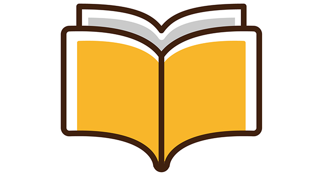

とてもシンプルな法則があります。
何かに上達したければ好きなモノ、やっていて楽しいモノ夢中になれるモノをやるに限る。
「好きこそ物の上手なれ」ですね。
趣味とかを見れば分かります。普通人は好きなことをやるとき熱心に追究するものです。ゴルフでも釣りでも、写真でも他者から見ればとうてい理解できないほどの熱意と情熱を傾け工夫し研究する。
外からはすごい努力に見えても本人的には、つらい努力をしているとは感じず、それどころか楽しんで追究している。
楽しんでいるからこそ上達するわけです。高いレベルに到達するわけですね。
仕事や勉強も同じで、楽しんでやっている奴には敵わない！
そりゃそうですよね。趣味の世界と同じで好きで楽しいことならむしろ難易度をドンドン上げていくことも快感なわけで、難しければ難しいほど喜んでチャレンジするから嫌々やっている（やらされている）奴に負けるはずがない。
塾で教えていた頃、最強の生徒は例外なく「楽しんで」勉強する者でした。そんな子がいるのかと言うなら、数は少ないけど確実にいると答えましょう。心の底から（趣味のように）勉強を楽しんでやる子です。そういう子は超の着く難関校にも軽くパスしてしまいます。
もちろん全教科を楽しんでやる子は例外的ですが、特定の教科（分野）なら興味をもてる子は想像以上に多いのです。
というか算数なら好きとか国語と社会は興味をもてるというのがむしろ普通で、どれもこれも嫌いという子のほうが少ない。だから親は、子どもがたとえ1教科でも興味を示すならそれをドンドン奨励すればよい。「国語だけできてもダメじゃない」などと言わないことです。
かくいう私も、小学生時代母親が「勉強勉強」とうるさく言うので勉強にあまり興味をもてずにいましたが、一つだけ例外がありそれは歴史でした。なぜ歴史が好きだったかというと、歴史好きの父親の影響もあったかも知れませんがそれより歴史（戦国時代や幕末、戦争など）を素材にしたマンガを描く趣味があったからです。
マンガは自分でストーリーを考えて描くのですが、やはり自分の空想だけでは限界があります。たまたま買った学習雑誌のフロクについていた歴史の本が面白くマンガよりそちらにハマってしまったのです。
そうなると学校の授業（歴史限定ですが）も楽しくなります。私は知っていることを話したり先生に質問したり時には意見を述べるようなことさえありました。
幸い担任の女性教師は理解ある人で、そんな私のうるさい質問攻めにもニコヤカに答えてくれほめてくれさえするのです。
私はますます「歴史の面白さ」にのめりこみ関連する本なども読みあさるようになりました。
ところがある日私にとって衝撃的な出来事が起こったのです。
勉強も趣味の1つと考える
それは歴史のテストを担任がクラス全員に返しているときでした。担任は私に答案を渡しながら「カンノ君また満点よ！」と言いました。するとクラスメートの女の子が不思議そうに「先生、カンノ君はどうしていつも満点とれるんですか」と聞くのです。先生は私の方をチラッと見ながらニコニコして言います。「そうね。本人にヒケツを聞いてみたら．．．」
私がなぜ衝撃を受けたかというと、私にとって歴史は趣味であり楽しみであり遊びの延長線にあるものにすぎないのに、その女の子にとっては歴史は「勉強」であり、他の教科と同じく「良い点」を取るための手段であったからです。彼女は良い点を取るための方法（ヒケツ）が存在しているのなら、それを知りたいといってるわけで私にいわせれば単に「好きになればいいじゃん」でしかないわけです。
その子は恐らく織田信長にも幕末の志士にも何の関心もなく、それらはただテストのために覚えるべき記号でしかない。良い点を取るために暗記すべき事柄の一つにすぎないのでしょう。
私は大好きな歴史がそのように扱われることで、やや大げさに言えば汚されたような侮辱されたような気がしたのです。このエピソードは50年以上たった今でもアリアリと覚えています。
つまり勉強も、まず内容に興味関心ありきで始めなければならない。好きであればレベルを上げていくことは簡単。私にとって歴史が、いつの間にか学校の教科書レベルでは満足できない地点に達していたように。（さっきから自慢気に語っていますが歴史以外は並みのレベルでしかなかったことを告白しておきます）
勉強も趣味のように楽しんでやればテストの点など簡単に上げられる。
そうなのです。だから子どもに良い点を取ってもらいたいなら、勉強を趣味にしてしまうのが一番と言いたい。ふざけて言ってるのではありません。
そもそもナゼ勉強というと苦しんでやるものだと思い込んでいるのか。そこに気づいて下さい。他の趣味やスポーツ習い事のように楽しんでやればよいのに、なぜ勉強だけ神棚に上げるようなことをするのでしょう。勉強に深刻さを持ち込むから皆あんなに勉強ギライになるのです。
もちろんスポーツでも芸術でもプロを目指すとか一流になるためには「楽しい」だけでは済まされません。ハードな練習はどうしても必要になってきます。勉強ももちろんそう。
しかし最初の出発点に「楽しい」「興味関心」がなければその後の成長はありません。
そこからスタートして少しでも上達すれば「好き」になりますます追究しようと「意欲」がわきます。推進力は強い好奇心です。
そうなるとさらに良いことが起きます。それは没頭する喜びです。いわゆるフロー体験です。
没頭しフロー体験を積むことが成功につながる
ここからは「勉強」からテーマは少し外れますが、私は何かに没頭する経験は人生の成功体験に通じるという意味で重要だと思っています。
誰でも何かに熱中して時間も忘れる経験があると思います。夢中で何かをやっているとき自分と対象は分離せず一体化していることに後で気づきます。
これは趣味でも仕事でも起こります。
たとえば社運をかけたプロジェクト。様々な解決すべき困難が目の前にあり、必死で難問に向かい合いながら考えているとき突如、アイディアが天啓のようにひらめき一気に解決するf。これは問題と自分が一つになっているとき起こるようです。
それは一つの問題に没頭しているときに起こるといいかえてもよいかも知れません。
自分が何をすべきか、どの方向へ進むべきか完全に正しい「解」に導かれるのです。
それは「ああすればこうなる」とか「この方向でいけばこうなるはず」という計算的な思考がない瞬間、あるいはそのような計算をやり尽くして打つ手がないような瞬間に訪れるようです。
そういうときまさに奇跡のような「ゴール」「目標達成」が成されます。
これは今世紀最大の心理学者といわれるハンガリーのチクセントミハイが提唱する「フロー理論」に詳しく述べられています。
フローとは何かに没頭するとき、自分と対象が一体化したとき起こる現象です。いわゆる「神が降りた」という状態。
では、フローあるいは没頭状態のときなぜすばらしいことが起こるのかというと私の考えではこうなります。
没頭とは読んで字のごとく、頭が没している状態すなわち「自分がいない」状態だからです。日頃アレコレ考え悩んだりしている「小さな自分」が不在な状態です。
自分がいないとどうなるか。自分と外側の世界の境界もなくなる、あるいは曖昧になる。つまり世界と一体化したといえます。
自己というエゴが消えることによって、世界と自分を隔てていた壁がなくなりあらゆる情報（知恵）とアクセスしやすくなる。
そういうことではないかと思われます。
だから次のようにいえるでしょう。
何かをするときーそれは好きなことや興味関心のあることがベターだがー未来の利益や損得計算抜きに没頭することが大切である。
それはエゴのない、対象と一体化した純粋な「今このとき」であり、その「今」が継続することで人はもっとも高いレベルに達するということです。
だから本当に子どもに勉強して欲しいと願うなら、親は「将来に備えて」とか「テストの点を上げるため」というエゴ丸出しの脅し文句ではなくーそれは子どもを勉強ギライにするだけなのでー子どもの興味関心を育てるような心遣いをするべきです。
子は親を映す鏡といえます。親が勉強をエゴイスティックな「手段」と考えるなら、子どもはそこに没頭する喜びを見出せず勉強の真の価値に目覚めることもないでしょう。
そしてその後の人生においても何かを達成するには「つらい努力」を嫌々しなければならないという誤った刷り込みがなされてしまうかも知れません。
まさに親の人生観が子に反映しているわけです。
だから親の皆さんに言いたいことは、むしろ親である自分こそが純粋に没頭する経験を一つでも多く積み、フロー体験のような「成功」の喜びをもつこと。そうすれば子どもに対しても勉強することの大切さ、喜びを自然な形で伝えることができるでしょう。